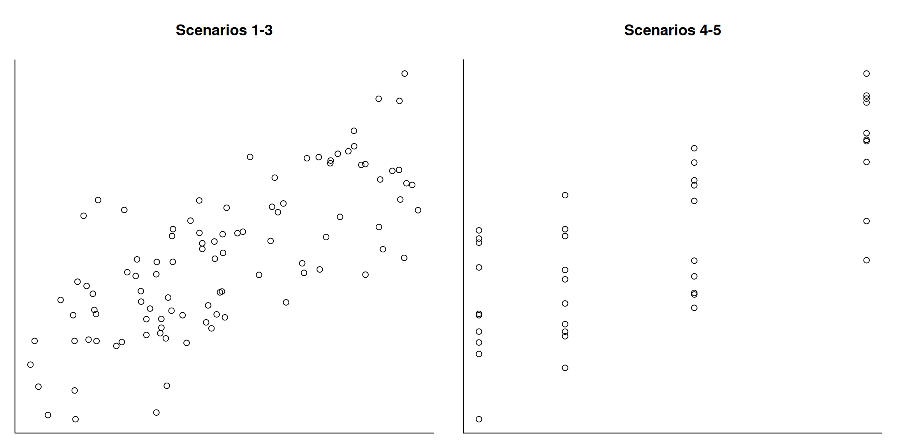
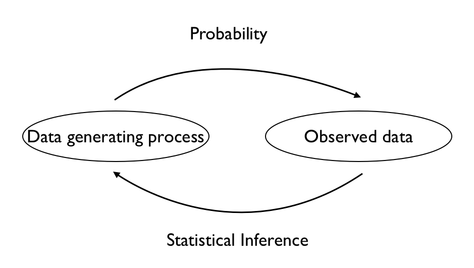

Thinking probabilistically about data
Corresponding reading
- Chapter 1 of Agresti and Kateri (2021)
Questions/Goals for this Module
Why do we think of data as random? What do we mean by this?
What are possible sources of randomness in data?
Let’s return to what we said in the introduction: We are able to perform inference by thinking of our data as random, and we use probability to model aspects of our data. In this module we are going to discuss what probabilistic modeling of a data generation process might look like.
A common way to think about how probability and statistics interact is given by this diagram:

The idea is that probability studies what kind of data you would expect if you knew the data generating process, while Statistics looks at data and tries to understand what type of data generating process might have created the data we observed.Example
Let’s consider a concrete example of the difference here. We consider a simple problem of visitors to a website. We could use probability to model this process.
For example, we could assume that the number of visitors in an interval of 10min is distributed \(Poisson(\lambda)\) and independent of the number in any other such interval. \(\lambda\) would give the rate of visitation to the site. We have described a data generating process, also called a probabilistic model and we could ask questions such as
- on average how many visitors to expect in a particular time interval for a particular \(\lambda\)
- determine the \(\lambda\) at which the probability is greater than 0.80 that the demand in a time interval would be above capacity of the host (i.e. crashes the website)
These are probability questions – we start with a probability model and describe what results we would be likely to see.
Alternatively, you could have records of visits to the website in 10min intervals – this is our data. Using only this data, how could we answer? Well, we’d like to not assume a \(\lambda\) but instead estimate what is it’s actual rate. I could still assume the same probabilistic model as above, but rather than trying to understand what type of data the probability model will generate for an arbitrary \(\lambda\), I want to estimate something about that probability model based on my data. More than that – I’d like to be able to say something about how accurate my estimate is. This is where statistics comes in and diverges from probability.
Why consider data random?
Why should we consider our data random? This is actually a really important question. After all, if I just hand you a spreadsheet of numbers in columns, what about it is random? They seem pretty fixed and determinate at that point.
Consider the following scatter plots that shows imagined data collected on two variables:1
Consider the following possible descriptions of this data and consider what about this data you might consider random? How is that influenced by how the data was collected? What kind of statement might you want to make about this data, and how does randomness play into this? Scenarios 1-3 go with the left plot and Scenarios 4-5 go with the right plot.
The data comes from a government survey of randomly selected mid-aged people. The survey asks them a bunch of questions about their life, and two variables are shown above. Each point is the response from a single respondent. The y-axis is their measure of how happy they are with their life and their x-axis is their current income
I take the list of current phone numbers of my high school class and call them all up (it was a small high school!). Each point is the response from a single respondent. The y-axis is their current income and the x-axis is their GPA in high school.
I scrap a website that provides user reviews of a product and use a language processing app to process all of the review to give a numerical score based on the review. Each point is a single review. The y-axis shows the score and the x-axis shows the length of the comment.
A physics class puts different masses on a spring and measure the length of the spring. The x-axis shows the mass added to the spring, and the y-axis shows the length of the spring. The same mass was put on the spring and measured multiple times.
A company is testing the effectiveness of different doses of a drug for weight loss. Each participant is randomly assigned a dosage, and monitored for their weight loss. Each point is a participant in the trial. The y-axis is the weight loss, the x-axis is the dosage of the drug.
Exercise/Question
What differences do you notice about the two plots and how does that relate to the description of the source of the data?
In thinking through these settings, we can see several common sources of randomness we can encounter in the real world, and in the same dataset we can see multiple sources of randomness.
- Randomness due in our selection of which people (or units) we study
- Randomness due to measurement error
- Randomness due to our choice of intervention (meaning we changed something for specific people or units)
We can also divide randomness in a different way based on what we know about the randomness
- The investigator creates or controls the randomness. For example in the government survey, the government uses a random sample, and they setup that selection process. Similarly, in the drug dosage example, the company controls the random assignment to dosages.
- The investigator doesn’t control the randomness, but we have reason to think it follows a random generating process In the spring example, the randomness (measurement error) comes from life and we don’t know what it is exactly. But we have good reasons to think that the measurement error would behave similarly if we repeated the experiment, i.e. like a random process. Not that we would get the same measurement error, but that it’s reasonable to think of it coming as if it is drawn from the same random process every time.
- Not random, but arbitrary In the case of the website review, we could think of the selection of people that left reviews as a random process, similar to measurement error. But we don’t know anything about it nor any idea in what sense is it random. In this case the selection of people is often better to be though of as arbitrary rather than random, since in statistics “random” has a specific meaning (unlike the colloquial use of the word).
Note
Notice that a lot of our thought process here involves some variant of thinking “what would change if I collected this data again”? This is a common way of thinking about randomness, and this view of randomness is often called long-term probability or the frequentist perspective.
Such a thought experiment underlies much of what we will cover, but is not always satisfying. For example, what does it mean for weather or stock market data? We are never going be able to rerun the stock market nor the weather and so the notion of long-term frequency can be unsatisfying.
Frequentist probability is not the only way to think about uncertainty in the data – the Bayesian perspective is another approach but we will not have time to be able to cover it in this class (the book has examples of Bayesian analysis that I encourage you to read).
Vocabulary
There is some important vocabulary that goes along to help describe types of data we might observe, and these are generally related to how the data was collected and the randomness we will observe.
- Units: These are the objects we can collect data on
- Sample: A set of units (often used to describe the set of units in our data). By describing them as a sample, we are implicitly saying they are a subset of all possible units of interest. This is unlike my high school alumni example, were I collected data on everyone. I shouldn’t say that was a sample of the high school from my graduating class – we call a dataset a census when you collect all units of a population.
- Population: This is the larger set of units from which our sample comes.
- Experimental Data or an Intervention: This describes both the spring and the drug dosage data. This is when the data are the result of the investigator setting a particular condition or setting, and then collecting data on what is the response under that condition. As we will see this is a gold-standard for determining how changing the condition of our unit will result in a change in other variables. As a side note, we will often see with intervention data that you will have shared values among your units in what interventions they are given – you don’t generally pick an arbitrary dosage to give a patient. You pick a few carefully selected dosages to explore, and then assign each patient one of them.
- Observational Data This describes all of the remaining datasets. The variables measured are as the investigator observes them – there’s no intervention on the part of the investigator. We only see what naturally occurs together, not what would have happen if we assigned one of the variables to the unit. This will be an important distinction when we think about causality and multiple regression later. Notice that you can have very high quality, and well designed data, such as the government survey, but it is still an observational study. The government doesn’t intervene and give someone a salary at a certain amount and then come back and see how happy they are a year later. It measures what is co-occurring naturally.
- Random Sample This describes how we select the sample of units in our data, and it specifically implies that the investigator used a known random process to select the units. The key property distinguishing a random sample from an arbitrary sample is that the random mechanism for selecting units from the population is known.
- Simple Random Sample The most common example of a random sample, where every unit in the population is equally likely to be selected. But there are other ways to randomly select samples where you preference some units over others.
- Convenience sample Data that are collected based on some convenient mechanism, with no randomness introduced by the investigator into the choice of which samples are picked. It might also be called a sample of convenience. Many datasets fall under this category. Frequently the investigator doesn’t even choose the units – they are given the units by processes they do not completely control, like the website scrapping example or people who choose to enroll in a drug study. Other times the investigator does choose the units, but their mechanism is not random, e.g. picking every 10th person in the school directory.
References
Agresti, Alan, and Maria Kateri. 2021. Foundations of Statistics for Data Scientists. Chapman; Hall/CRC.
Footnotes
This is not real data, but simulated data to make a point!↩︎